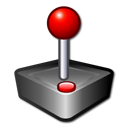

This project is one step forward toward setting up universal mouse steering in racing games on Linux. Some games come with mouse support out of the box, while other games require additional setup. The game in question is Rigs of Rods – an open-source vehicle sandbox-simulator that is available on both Windows and Linux platforms. This game does not support mouse steering by default, however there are instructions on how to configure this function by creating a virtual joystick and binding it to mouse and keyboard inputs. Unfortunately, those instructions are written for Windows and require two pieces of software that aren’t readily available on Linux – vJoy and FreePIE.
We need 1) to read mouse output, specifically x and y axes values and 2) create a virtual joystick to adapt said mouse output to joystick input. A brief search online revealed the evdev interface that “serves the purpose of passing events generated in the kernel directly to userspace through character devices”1. The python-evdev package is a convenient Python wrapper around the interface which can be installed with pip3 install python-evdev. The second piece of the puzzle is python-uinput package which is the “interface to Linux uinput kernel module which allows attaching userspace device drivers into kernel”2; it can be installed with pip3 install python-uinput.
Below is the final script and explanation.
{{< include _mouse_to_joystick.py >}}The script needs to be run with sudo, as we read /dev/input/ which requires superuser access
First, we search for all the connected input devices and filter the first device with mouse in its name which is typically the only mouse device in the system (laptop touchpads have touchpad in their names). Second, we print its capabilities to find the device layout, the type of axes and codes as well as their minimum and maximum range values. We store the max range as a constant RANGE for later use.
After that, we create a virtual joystick device with a simple layout – x and y axes. These axes require min and max range definitions that typically revolve around 0 meaning that every value below 0 represents left and up directions (depending on an axis) and everything above 0 – right and down directions.
Because the reported mouse values are in the range of 0 - 65535, we need to clamp those values so that they wrap around 0 – the range of -32768 and +32768 for 1:1 motion range. For that we use the previously assigned constant HALF_RANGE which is RANGE devided by 2. In order to adapt mouse values to joystick values we subtract 32768 from every mouse value that we read: 1 becomes -32767, 2 becomes -32766, etc.
Finally, we emit those new values on respective joystick axes and print them in terminal for debugging.

In order to see our virtual joystick in action, we can install the jstest-gtk program which is available through every distribution’s package manager.
The joystick is identified as python-uinput and contains 2 axes and 0 buttons as expected. It is only available when the script is running and will eject on program exit (you may need to click Refresh for the joystick to appear). To terminate the program we can press Ctrl-c or close the terminal.

Here is the result – mouse cursor movement is directly translated into joystick movement.
The next step is to add buttons to the joystick and map them to appropriate keyboard and/or mouse keys which should be easy to do by reading the documentation.